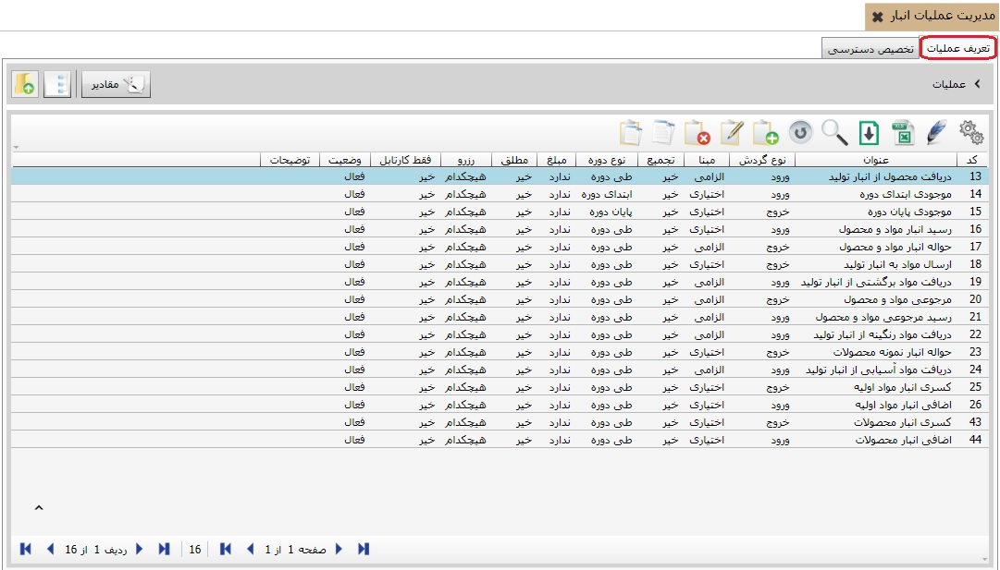
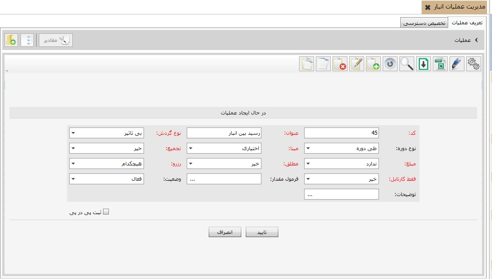
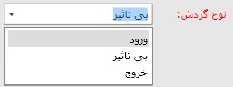
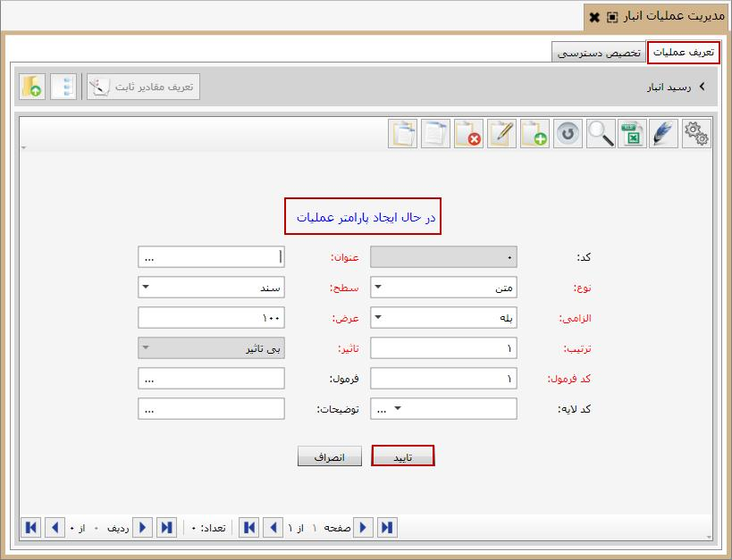
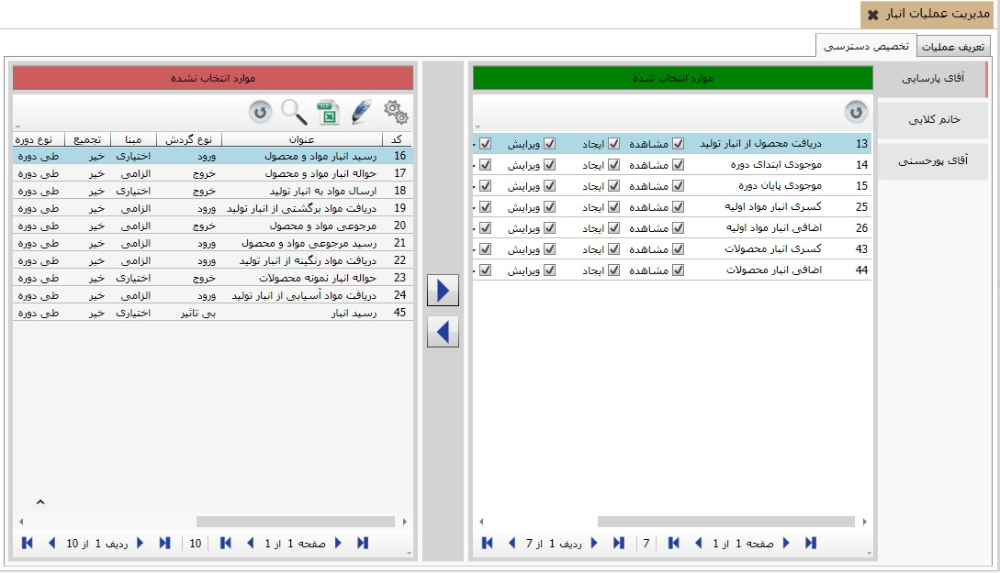

برای صدور سند انبار تعریف عملیات انبار الزامی است، در این جا به نحوه تعریف عملیات انبار می پردازیم. برای ایجاد عملیات انبار، روی گزینه «مدیریت عملیات انبار» از منوی «اطلاعات پایه و عملیات» کلیک کنید، پنجره ای باز می شود که شامل دو تب «تعریف عملیات» و «تخصیص دسترسی کاربر به عملیات» می باشد.
با استفاده از این دو تب به ترتیب شما می توانید عملیات انبار را ایجاد کنید و در گام بعد مشخص کنید که هر کاربر به کدام عملیات دسترسی داشته باشد.
در این تب می توانید عملیات مورد نیاز انبار را تعریف کنید، شکل قبل عملیات تعریف شده در سیستم انبار را هم به صورت جدولی و هم به صورت درختی نمایش می دهد. در صورتی که قبلا عملیاتی برای انبار ایجاد نکرده اید یا اگر می خواهید عملیات جدیدی به لیست عملیات اضافه کنید، از جدول موجود گزینه اضافه را انتخاب نمایید تا فرم ایجاد عملیات انبار باز شود:
کد عملیات به صورت اتوماتیک توسط سیستم تعیین می شود، البته قابلیت ویرایش شدن دارد. در فیلد عنوان، عنوان عملیات جدید را تایپ کنید، برای مثال ما در این جا عملیات رسید بین انبار را ایجاد می کنیم. اگر عملیات در حال ایجاد دارای شخص باشد در فیلد شخص از لیست باز شده گزینه «دارد» را انتخاب کنید و در غیر این صورت گزینه «ندارد» را انتخاب کنید.
همچنین در مورد فیلدهای انبار، مرکز هزینه، شعبه و پروژه اگر از لیست باز شده گزینه «دارد» را انتخاب کنید در هنگام صدور سند انبار باید فیلد های مربوطه را معین کنید و در صورت عدم تعیین، سیستم به شما اجازه ثبت سند را نخواهد داد.
درلیست باز شده از فیلد عملیات با توجه به اینکه عملیات در حال ایجاد چه تاثیری روی موجودی انبار خواهد گذاشت یک گزینه را انتخاب می کنید. در اینجا چون عملیات حواله خروج یک نوع خروج کالا از انبار است ما گزینه خروج را انتخاب می کنیم.

در لیست باز شده از فیلد مبنا، اگر می خواهید عملیات در حال ایجاد الزاما بر مبنای عملیات دیگری صادر شود گزینه «الزامی» و در غیر این صورت «اختیاری» را انتخاب نمایید. اگر گزینه الزامی را انتخاب کنید در فرم صدور سند باید ردیف های سند در حال صدور را بر مبنای ردیف های سند مبنا انتخاب کنید. در مثال ما می خواهیم عملیات رسید بین انبار الزاما بر مبنای عملیات حواله بین انبار صادر شود بنابراین گزینه «الزامی» را انتخاب می کنیم. عملیات مبنا می تواند هر یک از عملیات های سیستم تولید، انبار، خرید و فروش یا سفارشات باشد.)
سند مالی: در سیستم انبار تمامی اسناد فاقد سند مالی می باشند لذا هنگام ایجاد تمام عملیات انبار در فیلد سند مالی گزینه «ندارد» را انتخاب کنید.
مطلق: زمانی که چند عملیات یک مبنای مشترک داشته kباشند اگر فیلد مطلق را برای تمام آن عملیات ها «خیر» قرار دهید در هنگام صدور سند در قالب آن عملیات ها بدون توجه به اسناد صادر شده قبلی سند جدید صادر می شود، ولی اگر برای یکی از آن عملیات ها فیلد مطلق روی گزینه «بله» باشد آن گاه هنگام صدور سند تمام اسناد صادر شده قبل که دارای مبنای مشترک با این سند می باشند چک می شوند و فقط تا سقف تعداد کالا هایی که بعد از سند مبنا بدون عملیات باقی ماندند می توان سند صادر کرد.
در ادامه ی فرم ایجاد عملیات انبار از آنجا که اسناد انبار فاقد سند مالی هستند فیلد کد حساب که در واقع یک سمت سند حسابداری است عملا بی معنا می شود و لازم نیست برای آن گزینه ای را مشخص کنید.
شما می توانید از طریق فیلد فرمول مقدار، برای مقدار عملیات ایجادی فرمولی تعیین کنید که در هنگام صدور سند انبار بر حسب آن فرمول، مقدارعملیات محاسبه گردد. با کلیک بر علامت سه نقطه ... داخل فیلد ، پنجره ویرایش فرمول ظاهر می شود که می توانید داخل آن، فرمول را وارد کنید .
در ادامه، فیلد وضعیت به صورت پیش فرض روی گزینه فعال می باشد، چنانچه در هر زمان آن را به حالت غیر فعال تغییر دهید دیگر نمی توانید بر حسب آن عملیات، سند انبار صادر کنید و عملیات غیر فعال در فرم صدور سند انبار نمایش داده نمی شود.
و در نهایت اگر توضیحی لازم بود در فیلد توضیحات تایپ کنید و بر روی دکمه تایید کلیک کنید. بدین ترتیب عملیات جدید ایجاد می شود و می توانید آن را در لیست عملیات مشاهده کنید.
همچنین هر عملیات می تواند چندین پارامتر داشته باشد، برای مشاهده پارامتر های هر عملیات می توانید روی عملیات مورد نظر دبل کلیک کنید و در صفحه ای که باز می شود لیست پارامتر های آن عملیات را مشاهده کنید. (تعریف پارامتر برای عملیات الزامی نیست و بسته به نوع کار می توان برای عملیاتی پارامتر تعریف کرد.)
برای اضافه کردن یک پارامتر جدید برای عملیات مورد نظر روی ان عملیات دبل کلیک کنید سپس از صفحه ای که باز می شود روی آیکن اضافه کلیک کنید. فرم ایجاد پارامتر نشان داده می شود:
فیلد کد غیر فعال است و سیستم به صورت اتوماتیک پارامترها را کد بندی می کند. عنوان پارامتر را در فیلد عنوان تایپ کنید و نوع آن را از لیست باز شده انتخاب کنید .
پارامتر عملیات را می توانید در سطح سند تعریف کنید و یا در سطح ردیف، اگر پارامتر را در سطح سند قرار دهید پارامتر ایجادی روی کل سند تاثیر می گذارد و در انتهای فرم صدور سند انبار به صورت یک فیلد از شما سوال می شود. اگر پارامتر عملیات در سطح ردیف ایجاد شود به صورت یک ستون در فرم صدور سند انبار نمایش داده می شود و شما باید مقدار آن پارامتر را برای هر ردیف سند جداگانه مشخص کنید.
اگر فیلد الزامی را روی بله تنظیم کنید در هنگام صدور سند انبار الزام به تعیین مقدار پارامتر دارید و در صورت عدم تعیین آن سند انبار ثبت نمی شود. فیلد عرض، عرض ستون پارامتر در سطح ردیف و یا عرض فیلد پارامتر در سطح سند را تعیین می کند. و در فیلد ترتیب پارامتر های یک عملیات به ترتیب ایجاد شماره می گیرند.
اگر در لیست باز شده از فیلد نوع، گزینه پول را انتخاب کنیم فیلد تاثیر فعال می شود و بسته به تاثیری که پارامتر ایجادی روی مبلغ سند خواهد گذاشت باید یکی از سه گزینه موجود در لیست را انتخاب کنیم.
کد فرمول به صورت پیش فرض برابر با همان شماره ترتیب می باشد و در هنگام تعریف فرمول ها از این شماره استفاده می شود.
شما می توانید داخل فیلد فرمول، فرمولی برای محاسبه پارامتر وارد کنید. با کلیک بر علامت سه نقطه ... داخل فیلد فرمول پنجره ویرایش فرمول ظاهر می شود و می توانید فرمول را وارد کنید. (در فرم صدور سند انبار مقدار پارامتر عملیات را می توان به صورت دستی وارد کرد و یا با فرمولی که در این قسمت وارد می کنید مقدار پارامتر به صورت اتوماتیک محاسبه می شود.)
و در نهایت با تایپ کردن توضیحات لازم در فیلد توضیحات و تایید کردن فرم ایجاد پارامتر عملیات، پارامتر جدید ثبت می شود.
اگر پارامتر یا پارامتر هایی از یک عملیات همیشه مقدار ثابتی داشته باشند، می توان برای پارامتر مقدار ثابتی را در نظر گرفت تا در فرم صدور سند، بتوانید یکی از آن مقادیر ثابت را انتخاب نمایید. با این کار بعد از انتخاب پارامتر مورد نظر روی گزینه تعریف مقادیر ثابت کلیک کنید سپس در صفحه ای که ظاهر می شود با انتخاب گزینه اضافه (f8) مقدار ثابت مورد نظر را وارد کنید.
پس از ایجاد پارمتر مورد نظر در صورتی که نوع پارامترشخص بود باید گروه های اشخاص
تعریف شده در منوی تعریف گروه های اشخاص و در صورتی که نوع پارامتر انبار بود
انبار های تعریف شده در منوی تعریف انبار ها را با استفاده از دکمه مفادیر
 به پارامتر مورد نظر تخصیص دهیم شکل های زیر این مراحل را نشان می دهد.
به پارامتر مورد نظر تخصیص دهیم شکل های زیر این مراحل را نشان می دهد.
گروه های مورد نظر را از قسمت موارد انتخاب نشده به قسمت موارد انتخاب شده انتقال دهید.

 برا ی مشاهده گروه های اشخاص در قسمت موارد انتخاب نشده ابتدا
باید گروه های مورد نظر را در منوی تعریف گرو های اشخاص، تعریف نمائید.
برا ی مشاهده گروه های اشخاص در قسمت موارد انتخاب نشده ابتدا
باید گروه های مورد نظر را در منوی تعریف گرو های اشخاص، تعریف نمائید.
بعد از ایجاد عملیات و پارامترهای مورد نیاز باید دسترسی کاربران به این عملیات را مشخص کنید، برای این کار از صفحه مدیریت عملیات تب «تخصیص دسترسی کاربر به عملیات» را انتخاب نمایید:

شکل بالا تب تخصیص دسترسی کاربر به عملیات را نمایش می دهد. همان طور که مشاهده می کنید در شکل بالا مشخص شده است که جدول سمت راست عملیات های در دسترس کاربر و جدول سمت چپ عملیات های خارج از دسترس کاربر را نمایش می دهد. برای اینکه تعیین کنید هر یک از کاربران به کدام عملیات دسترسی داشته باشند،
از لیست کاربران نام یکی از کاربران را انتخاب کنید و از جدول سمت چپ، عملیاتی
را که لازم است کاربر انتخاب شده به آن دسترسی داشته باشد را توسط کلید
 به جدول سمت راست انتقال دهید.
همچنین در صورتی که بخواهید عملیات خاصی را از دسترس کاربر خارج کنید،
عملیات مورد نظر را از جدول سمت راست انتخاب نمایید و توسط کلید
به جدول سمت راست انتقال دهید.
همچنین در صورتی که بخواهید عملیات خاصی را از دسترس کاربر خارج کنید،
عملیات مورد نظر را از جدول سمت راست انتخاب نمایید و توسط کلید
 به جدول سمت چپ منتقل کنید.
به جدول سمت چپ منتقل کنید.
 در فرم صدور سند انبار هرکاربرفقط
با عملیاتی می تواند سند صادر کند که دسترسی به آن عملیاتها را داشته باشد .
در فرم صدور سند انبار هرکاربرفقط
با عملیاتی می تواند سند صادر کند که دسترسی به آن عملیاتها را داشته باشد .